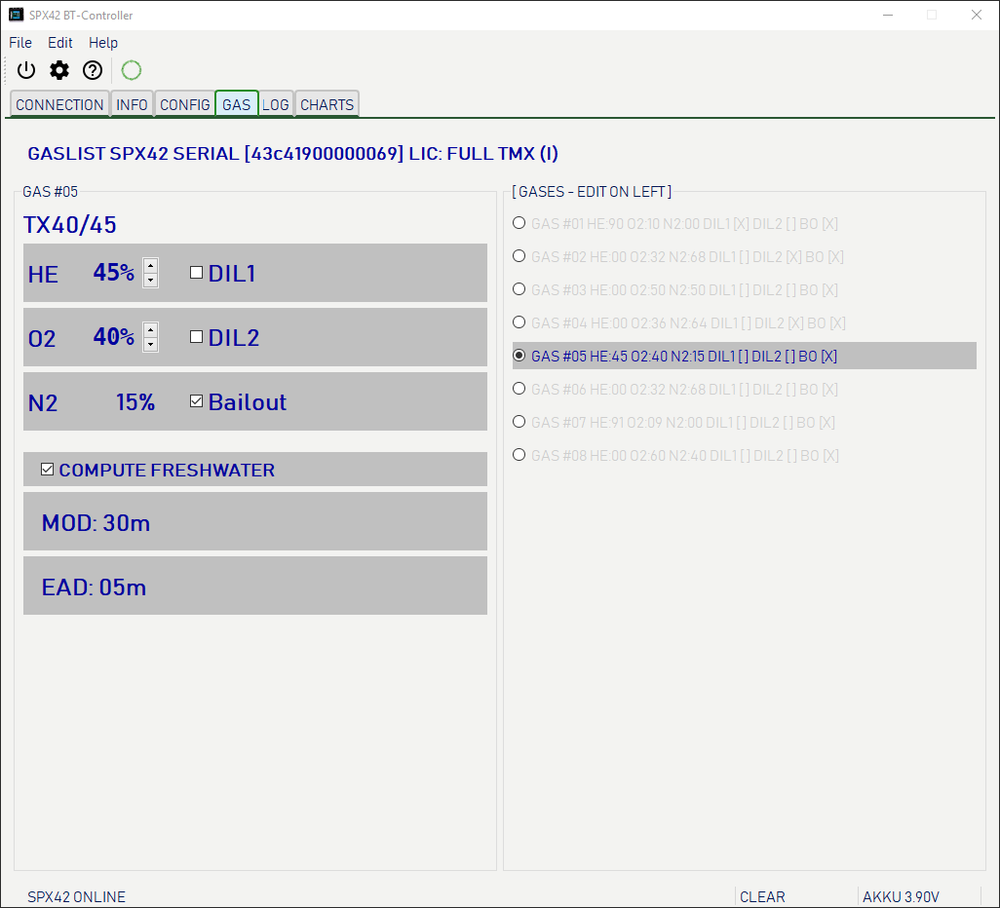
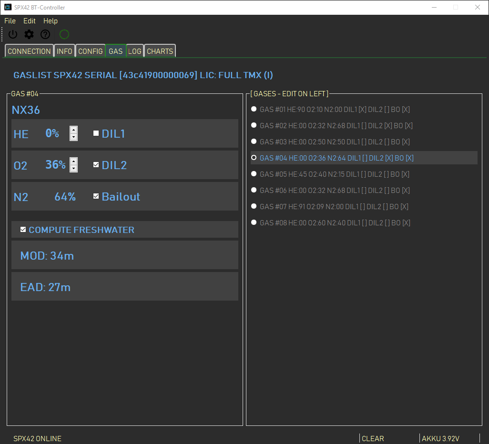
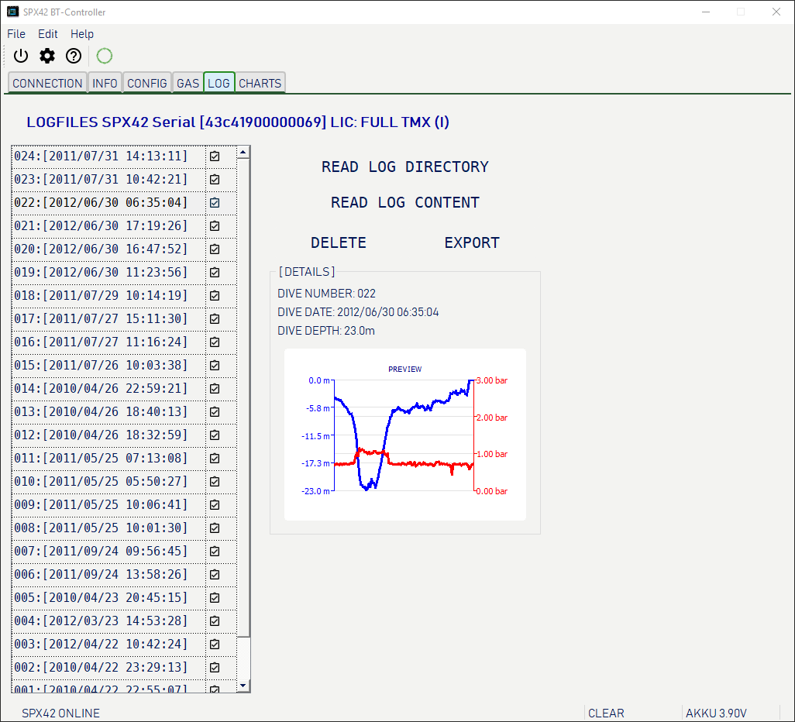
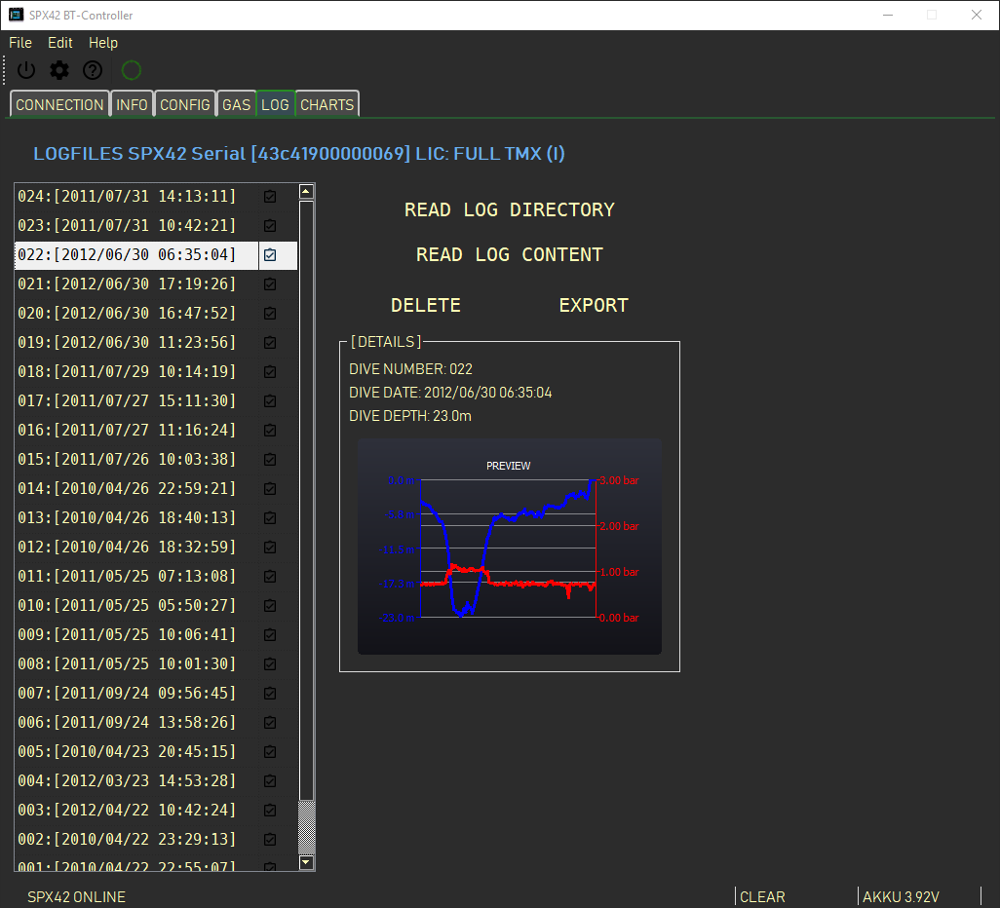
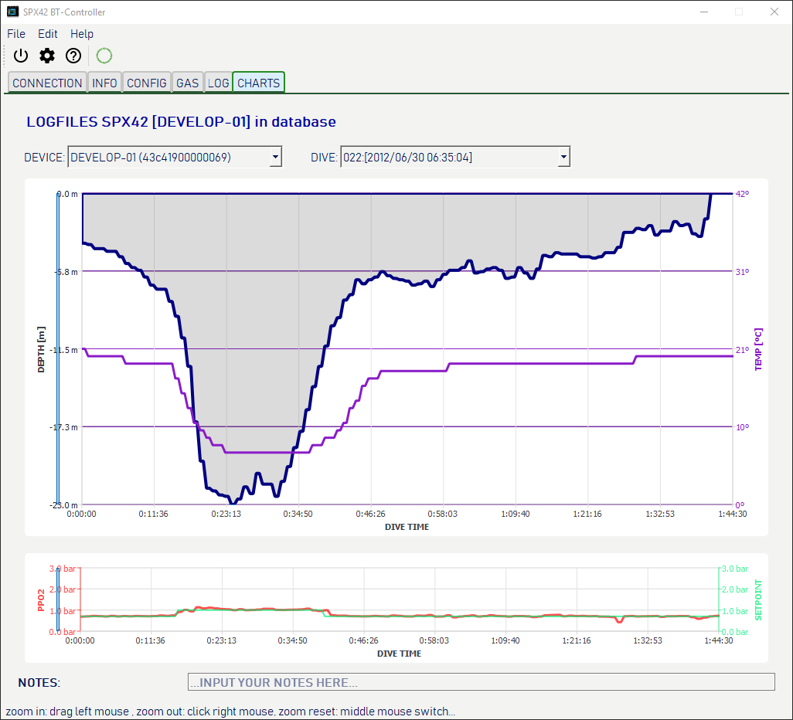
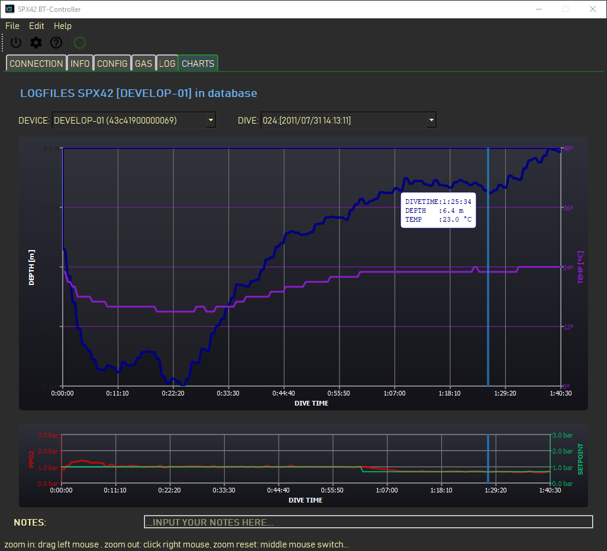

<!doctype html>
<html itemscope="" itemtype="http://schema.org/WebPage" lang="en"></html>
<head>
    <meta charset="UTF-8">
    <title>HELP for SUBMATIX SPX42Control</title> 
    <link rel="stylesheet" href="helpstyle-en.css">
</head>
<body>
  <div id="overview">
    <h1>OVERVIEV</h1>
    <div class="text">
      This programm (or app for application) controls the SPX42 Divecomputer over an 
      Bluetooth connection. Is sets
      date and time (if the firmware support this), it sets propertys like decompression
      settings, units and so fort. <br />

      The app is also for reading log data from the dive computer, it can visualize this
      and can export the data via the special UDDF file format for import and using 
      the data in external programs like "subsurface" or "Diving Log" on many systems.
    </div>
  </div>

  <div id="mark_00">
    <h1>CONNECT TAB</h1>
    <div class="text">
    The app starts in the "Connect" Tab.<br />
    <div class="image_preview">
      
      
    </div>

    The app comes with two prepared themes, a dark and a light one. You can see it on the preview
    picture. You can make an own theme with css style elements an apply them to the app. This
    will describe later.<br />

    To connect an SPX42 dive computer you have to pair them with the operating system before. 
    Sorry, this is a secure feature of the system software. Please read the documentation
    of your system to make an pairing.<br />
    </div>
  </div>

  <div id="mark_01">
    <h1>SPX42 INFO</h1>
    <div class="text">
      <div class="image_preview">
        
        
      </div>
      This view shows a few fundamental informations of the connected SPX42 computer,
      like model, serial number and firmware version.
    </div>
  </div>

  <div id="mark_02">
    <h1>SPX42 CONFIG</h1>
    <div class="text">
      <div class="image_preview">
        
        
      </div>
      On this page you can configure qll parameters of the SPX42 diving comnputer, except gases.<br />

      

      <!-- List -->
      <ol>
        <li>
          <b>Tool bar</b><br />
          Here are the fundamental functions on one piece. from left to right:
          <ul>
            <li>Exit the Application</li>
            <li>Call appp properties dialog</li>
            <li>Call this help</li>
            <li>Indicate online status / disconnect SPX32</li>
          </ul>  
        </li>

        <li>
          <b>Select the different tabs/pages</b>
        </li>

        <li>
          <!-- DECO-->
          <b>Configure the properties for decompression:</b><br />
          <i>see also „Understanding M-Values“ von Eric C. Baker</i>
          <dl>
            <dt>GF-LOW:</dt>
            <dd>lower gradient value</dd>

            <dt>GF-HIGH:</dt>
            <dd>higher gradient value</dd>

            <dt>CONSERVATISM:</dt>
            <dd>if not "user" then set this GF-LOW and GF-HIGH with presets</dd>

            <dt>DYN GRADIENTS ON:</dt>
            <dd>if "on" compute the SPX42 lesser conservatism gradients in case of bailout situation</dd>

            <dt>LAST DECOSTOP:</dt>
            <dd>where ist the last deco stop</dd>

            <dt>DEEP STOPS ON:</dt>
            <dd>if "on" makes the SPX42 depp decostops</dd>
          </dl>
        </li>

        <li>
          <!-- SETPOINT-->
          <b>Properties for oxygen partial pressure:</b>
          <dl>
            <dt>AUTOSETPOINT:</dt>
            <dd>if not off, switch the setpoint between 0.7 bar PPO2 and the destination setpoint if the 
              selectet deep arrived</dd>

            <dt>SETPOINT:</dt>
            <dd>the desired setpoint</dd>
          </dl>
        </li>

        <li>
          <!-- DISPLAY -->
          <b>Properties for the display of the SPX42:</b>
          <dl>
            <dt>BRIGHTNESS</dt>
            <dd>While the dive iluminates the display whith percentual brightness of this value</dd>

            <dt>ORIENTATION</dt>
            <dd>The display can show in landscape and 180 degrees rotated landscape</dd>
          </dl>
        </li>

        <li>
          <!-- UNITS -->
          <b>Physical units which operates the SPX42</b>
          <dl>
            <dt>TEMPERATURE UNIT</dt>
            <dd>The possibillitys are 'CELSIUS' and 'FAHRENHEID'</dd>

            <dt>DEPTH UNIT</dt>
            <dd>Metric or imperia - meters or foot</dd>

            <dt>WATER TYPE</dt>
            <dd>Generally freshwater or saltwater</dd>
          </dl>
        </li>

        <li>
          <!-- Individual-->
          <b>If licensed: individual options / properties</b>
          <dl>
            <dt>SENSORS ON</dt>
            <dd>Here you can generally switch sensors on or off</dd>

            <dt>PSCR MODE ON</dt>
            <dd>Switch Passive Semiclosed Rebreather Mode on or off</dd>

            <dt>SENSORS COUNT</dt>
            <dd>Select the count of sensors for compute PO2, b.e. you haven an defect sensor while a diving trip</dd>

            <dt>ACOUSTIC WARNINGS ON</dt>
            <dd>Switch on or off acoustic warnings (beep)</dd>

            <dt>LOG INTERVAL</dt>
            <dd>Set the interval for log diving values into the logfile in the SPX42</dd>
          </dl>
        </li>

        <li>
          <!-- statusbar -->
          <b>Status messages and short help vor items under the mouse</b>
        </li>

        <li>
            <!-- comm indicator -->
            <b>Indicator for the queue for write commands in direction to SPX42</b>
        </li>

        <li>
            <!-- akku -->
            <b>Power value for SPX42 acku (if connected)</b>
        </li>
  
      </ol>
    </div>
  </div>

  <div id="mark_03">
    <h1>SPX42 GASES</h1>
    <div class="text">
      <div class="image_preview">
        
        
      </div>

      On this page (if the SPX42 connected) can you edit the gases for diving with your rebreather device.<br />

      

      <!-- List -->
      <ol>
        <!-- Gas number -->
        <li>
          <b>Gas number to edit</b><br />
          It's the gas right selected.
        </li>

        <!-- Gas Name -->
        <li>
          <b>Gas name (automatic generated)</b>
        </li>

        <!-- gas edit fields -->
        <li>
          <b>Gas edit fields</b><br />
          Here you can edit the selected gas and set it to Diluent or/and bailout gas.<br />
          Gas can be:
          <ul>
            <li>A mixture dependent from you license state...</li>
            <li>Exacly on times DIL1</li>
            <li>Many times DIL2, but not at the same time DIL1 and DIL2</li>
            <li>Many times as bailout gas (OC)</li>
          </ul>
        </li>

        <!-- freshwater -->
        <li>
          <b>Compute MOD and EAD with fresh-or saltwater</b><br />
          <i>
            <b><u>M</u></b>aximum <b><u>O</u></b>xigen <b><u>D</u></b>epth <br />
            <b><u>E</u></b>quivalent <b><u>A</u></b>ir <b><u>D</u></b>epth
          </i>
        </li>

        <!-- MOD and EAD-->
        <li>
          <b>The computed values</b><br />
          for MOD and EAD if freshwater or saltwater for the selected gas.
        </li>

        <!-- Gases to select -->
        <li>
          <b>Gases on the SPX42</b><br />
          select here the gases for editing on the left side. The edited values will automatic
          send to the SPX42 Device, if an connection is established. <br />
          Show on the indicator for queue at the bottom, if the status is "CLEAR" before you
          go on another page. <br /><br />
          <b style="color: red;">ATTENTION!</b><br />
          If you switch the page unless the indicator shows "CLEAR" you may loss propertys for gas!
        </li>
      </ol>
      
    </div>
  </div>

  <div id="mark_04">
    <h1>SPX42 LOGS</h1>
    <div class="text">
      <div class="image_preview">
        
        
      </div>

      On this page will display logs from spx42, which is connected and / or logs saved in the database.<br />

      

      <!-- List -->
      <ol>
        <!-- log directory -->
        <li>
          <b>Directory of the logs</b><br />
          If an SPX42 dive comnputer is connected, press <b>"READ LOG DIRECTORY"</b> <i>(02)</i> to read out 
          the list of logfiles on the SPX42. If NOT connected you see the directory of
          log entries in the database for the device shown in the dropdown list
          (not visible in the picture and only in OFFLINE mode) <br />
          If any logs always stored in the database will display an mark on the line of
          the directory entry. If you select a line and the data are stored in the database 
          it will details show in the detail area <i>(06)</i> and an preview will show in the preview
          area <i>(07)</i>.<br />
          You can select on or many entrys in this list for furter actions (see later...).
        </li>
        
        <!-- read directory online -->
        <li>
          <b>Read the log directory from SPX42</b><br />
          This button is show if the SPX42 is connected. Else there is an Dropdonwn list of devices in then database.
        </li>

        <!-- read content from device -->
        <li>
          <b>Read the logfile(s) from the SPX42 device</b><br />
          If the SPX42 connected and you have selected on or many entrys in the log direectory <i>(01)</i>
          then will the app read these logfiles from device into the internal database. <br />
          While this will show an indicator after the preview <i>(07)</i>. Be patient, it takes a while.<br />
          If data always int the database and you re-read these, it will update these data in the database.
        </li>

        <!-- delete from database -->
        <li>
          <b>Delete data from database</b><br />
          If you press this button, you delete data from the internal database. Data on the SPX42 <b>can not</b>
          deleted. Please call the service if you want delete data from device.<br />
          If you selected one or many log entries in the directory on the left <i>(01)</i> then will 
          delete the data to these logs in the database.
        </li>

        <!-- UDDF Export -->
        <li>
          <b>Export data to file</b><br />
          If you have selected logs in the directory AND the data are always in the database then
          export an pressure on this button these data in a file. This file has an data formt called "UDDF"
          and include the version 3.0 of this standart.<br />
          This file / these files are for import in external dive logging programms like the popular 
          <b>"Diving Log"</b> for windows users or the free programm <b>"subsurface"</b> for many operating systems.
          This was originally written by Linus Torwalds. <br />
          Of course there are many other programms for your selection. 
        </li>

        <!-- Details -->
        <li>
          <b>Detail area</b><br />
          Here will display small details for the selected divelog in the directoy <i>(01)</i> if this
          log stored in the database.
        </li>

        <!-- Preview area-->
        <li>
          <b>Preview area</b><br />
          In this area can display an preview of the dive if the logfile was stored in the internal database 
          and this stored logfile is selected on the left <i>(01)</i>.<br />
          Else the area is blank.
        </li>
      </ol>
    </div>
  </div>

  <div id="mark_05">
    <h1>GRAPICAL OVERVIEW</h1>
    <div class="text">
      <div class="image_preview">
        
        
      </div>

      On this page will visualize saved logdata from SPX42.<br />
      It is an pure "Offline" page<br />

      

      <!-- List -->
      <ol>
        <!-- devices -->
        <li>
          <b>Select on of the stored SPX42 devices</b><br />
          Here lists all devices which have stored logs in the database.
        </li>

        <!-- dive list-->
        <li>
          <b>Select an dive from the device which left <i>(01)</i> is selected</b>
        </li>

        <!-- temperature and depth -->
        <li>
          <b>Graph/Chart #01 of the selected dive computer and dive number</b><br />
          The graph shows the depth and environment temperature while the dive along the time scale <br />
          While you hover the mouse over the chart, the mouse will track and an cursor will display
          the location. If the mouse not move, after a little while an popup with values for depth, 
          temperature and runtime. 
        </li>

        <!-- PPO2 and setpoint -->
        <li>
            <b>Graph/Chart #02 of the selected dive computer and dive number</b><br />
            The graph whows the setpoint value and the measured value for the PPO2 while the dive
            along the time scale<br />
            While you hover the mouse over the chart, the mouse will track and an cursor will display
            the location. If the mouse not move, after a little while an popup with values for setpoint, 
            partial presure of oxigen and runtime.  
        </li>
          
        <!-- note line-->
        <li>
          <b>Personal notes to the dive</b><br />
          Here you can write an personal note for this dive. This text will saved whlie export in the 
          "UDDF" file and can imported in your favorite diving log program.
        </li>

      </ol>
    </div>
  </div>

  <div class="ende">
    &nbsp; <br />
  </div>
</body>
</html>
